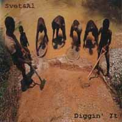

Я очень настороженно отношусь к традиционному блюзу и, честно говоря, большинство попыток как-то его воспроизводить отношу к нездоровым некрофилическим порывам, которые суть последствия авитаминоза. Но тут - ТУТ - мама родная - это что-то невероятное! Когда слушаешь этот альбом (всего в двадцать минут длиной - но это, тем не менее, настоящий альбом, законченный и совершенный, как хрустальный шар), ваша уравновешенная, казалось бы, крыша, оказывается где-то там, на Миссисипи, где, совершенно безумная, начинает околачиваться среди хмурых и суровых негров, копающихся в грязи и промывающих какое-то кровавое золото в мутных водах этой славной речной организации. Негры говорят на незнакомом птичьем языке, все как один они продали душу дьяволу, чтобы уметь петь блюз. Они курят довольно вонючий табак, рвут струны, очень неторопливо и молчаливо пьют виски - и поют блюзы. Блюзы, меняющие климат и направление ветра. Блюзы эти - спокойные, как индийские слоны, и истинные, как сам Джон Ли Хукер со всем своим акустическим наследием. Поверить в то, что это делают два молодых человека из Минска - "гармошечник" и вокалист Свет и гитарист Эл, практически невозможно. Только не подумайте, что это очередная восторженная журналистская гипербола - тут на самом деле такой шаманизм и аутентика, что крышу конкретно рвет в клочья. Ребята играют, в общем-то, стандарты. В общем-то, и особо хитрой инструментовки там нет - ритмика, притоптывание ногой (обязательное), несложные соло, просто великолепная и по-блюзовому грязная губная гармошка (вы сразу вспомните фильм "Перекресток", если даже не близки к блюзовым корням) - а еще неосознанная (наверное) звуковая стилизация под замечательную старину. Именно - неосознанная. И классический, пришептывающий, бормочущий, невнятный и подземный какой-то вокал. Демонический совершенно. И слушается этот диск не как нарочная попытка что-то там воссоздать или подклеить - это и есть НАСТОЯЩИЙ блюз. Со всеми истинными для положенного случая эмоциями, со сгоревшими сбережениями, сбежавшими девушками и заболевшей бабушкой, а еще с хлопковыми полями и прохудившимися башмаками. Нет, это точно шаманизм. Многие, ныне здравствующие нео-блюзмены уже явно позабыли, что на самом деле это делается именно ТАК. Не знаю, может всему виной одержимость духами мертвых блюзменов или какие-нибудь сделки на перекрестках те же - да какая разница? Откуда такая "корневая" черноземно-глубоководная энергетика в довольно юных белорусских хлопчиках - право слово, загадка какая-то. Хочется глупо сказать, мол, господа продюсеры, бросайте нах все, этих ребят надо раскручивать - но как-то нехорошо оно звучит. И так понятно, что с этим делать.Самое удивительное - это то, что диск хочется слушать еще и еще. Качество записи и характерная звуковая аутентика - все сделано по высшему классу. На самом деле прицепиться совершенно не к чему, да и не хочется. Эти ребята совершенно серьезно могут прогреметь не только в Беларуси, потому что ничего "местного" в этой музыке нет. В общем, огромный вам блюзовый респект, уважаемые!